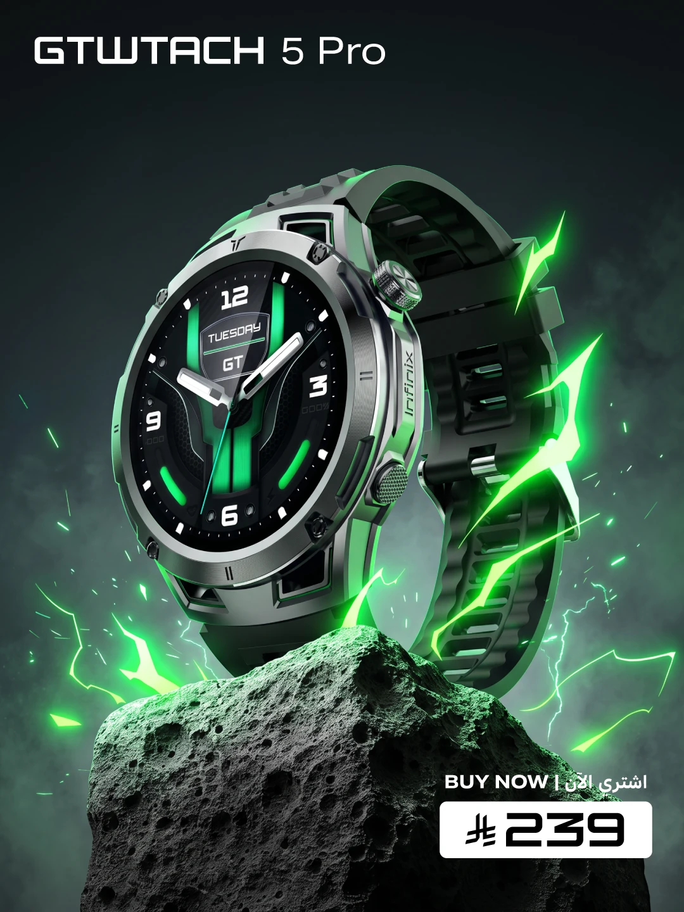
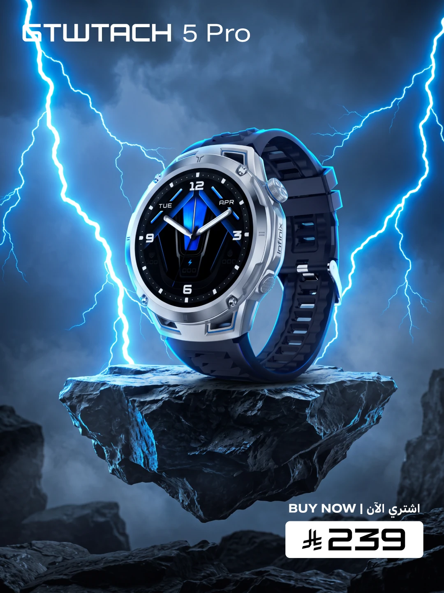
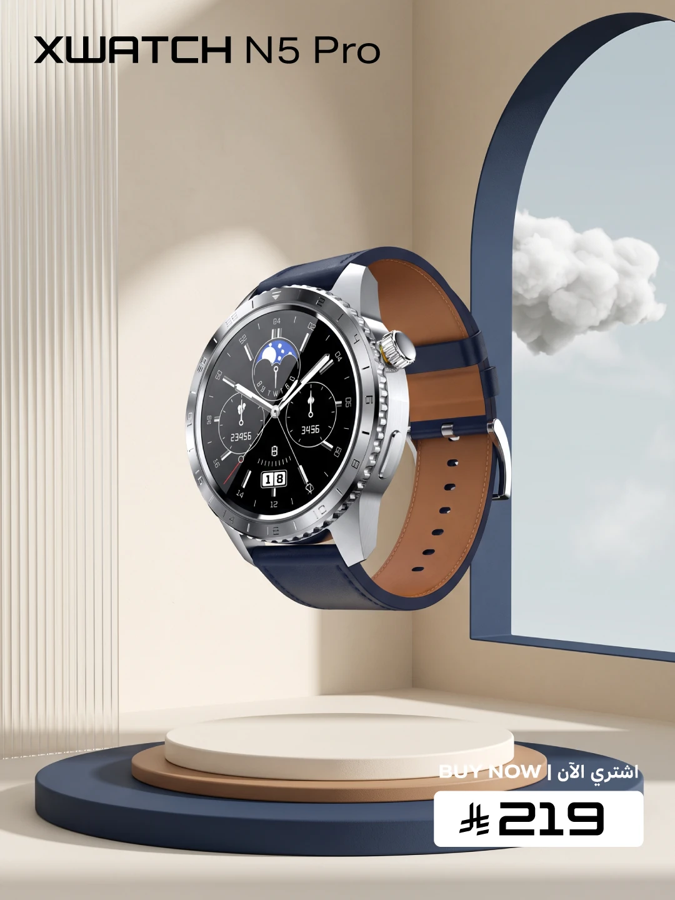
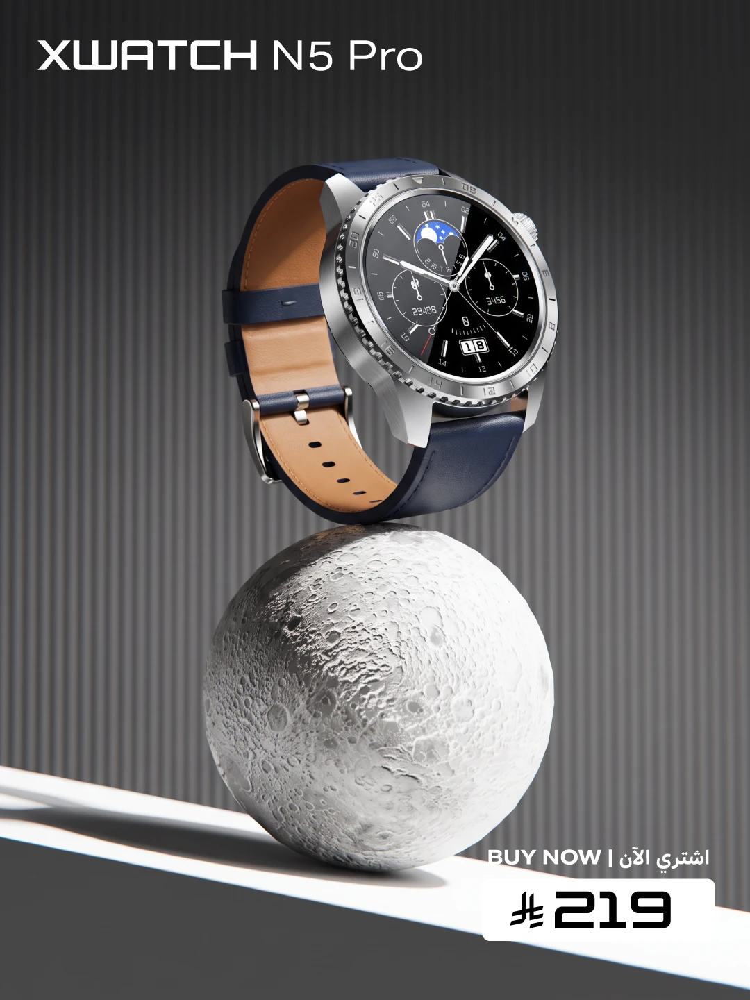
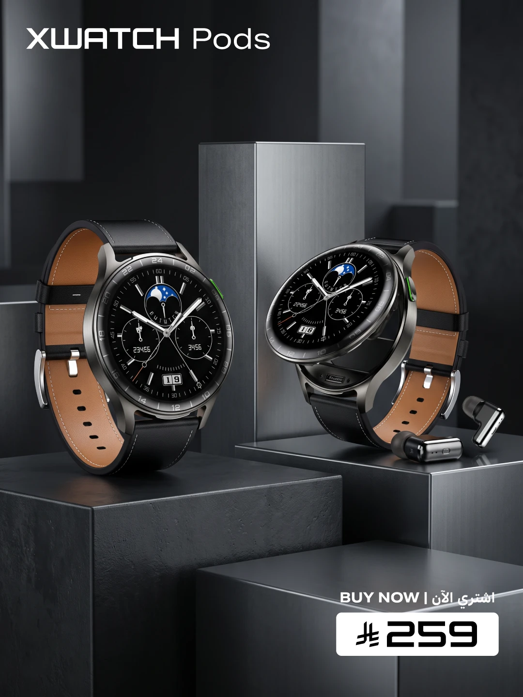
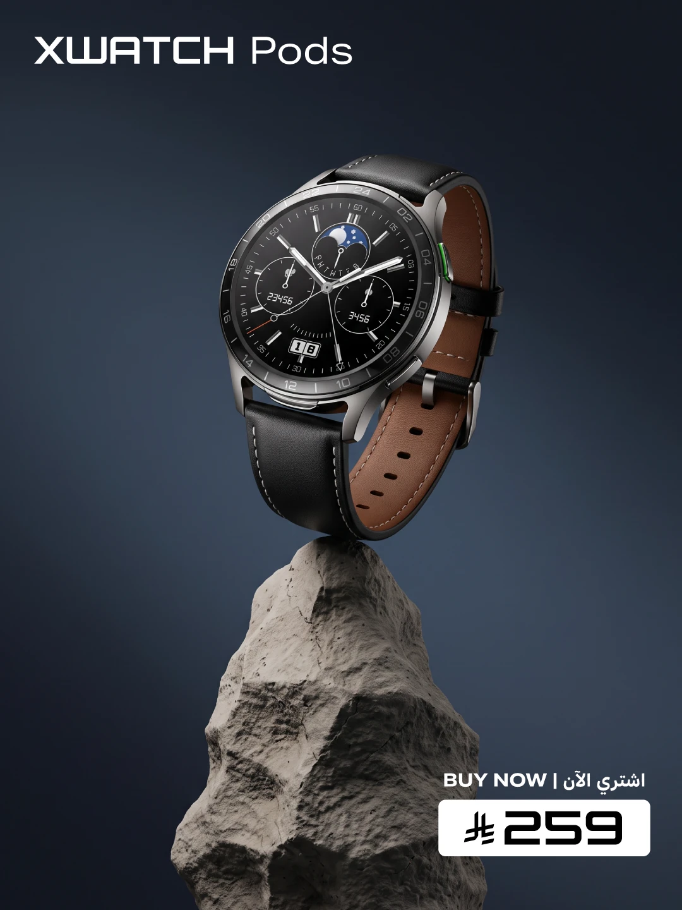

Infinix AIOT
Smartwatch Visuals
Three smartwatch collections · Six AI-assisted stills
A product-focused AI stills project exploring three smartwatch collections, with two distinct visual directions for each model — each tailored to communicate the product through a different visual style.

Three watches.
Six visual directions.
Each watch has two AI-assisted stills, with a style selected to express the character and product presentation of the model rather than applying one repeated look across the whole range.
AI stills for AIOT products — six images across three smartwatch models, with two visual treatments for each watch.
GT Watch
5 Pro
Two contrasting, high-energy product visuals for the GT Watch 5 Pro.


XWatch
N5 Pro
Two visual explorations for XWatch N5 Pro, balancing a refined product presentation with a more conceptual setting.


XWatch
Pods
Two stills presenting XWatch Pods through premium product imagery and a distinct display environment.

